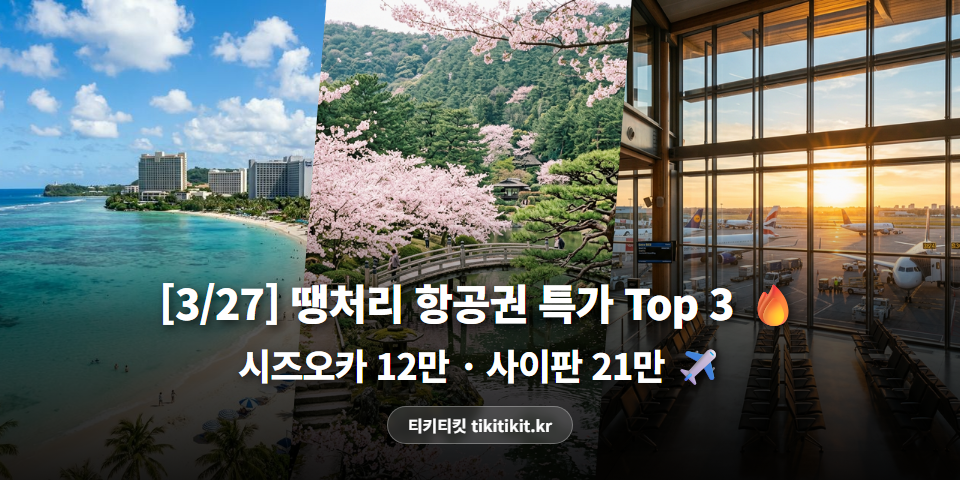
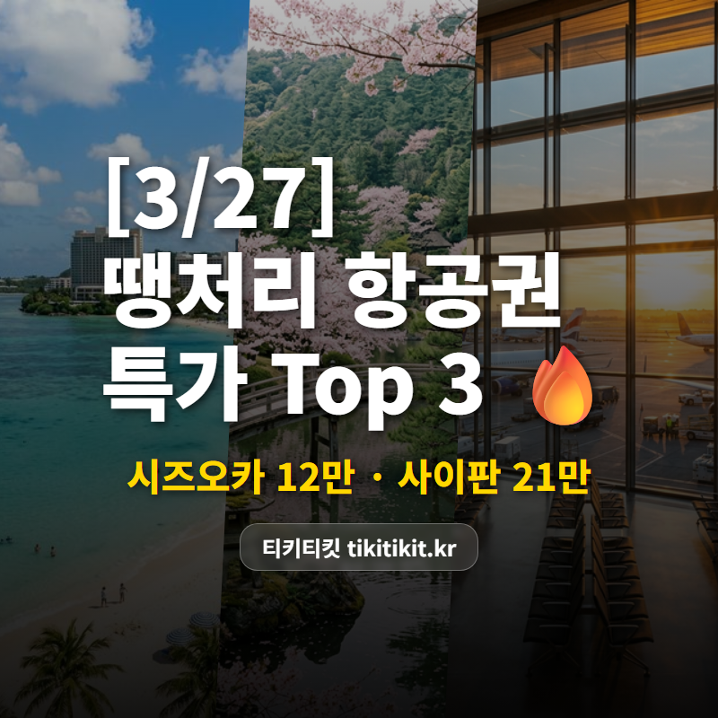

[3/27] 땡처리 항공권 특가 TOP 3 | 시즈오카 12만원, 사이판 21만원 ✈️

오늘의 특가, 가격 보고 깜짝 놀랐어요 😲
시즈오카 왕복 12만원대!
망설이면 놓칩니다.
🏆 3/27 추천 특가 TOP3
🥇 1위
부산 ↔ 시즈오카
에어부산 · 4/3(금)~4/6(월) · 3박 4일
120,000원

후지산이 보이는 온천의 도시 ♨️
🥈 2위
인천 ↔ 사이판 (태평양)
제주항공 · 5/12(화)~5/16(토) · 4박 5일
219,000원

마나가하 섬에서 투명한 바다 속으로 🐠
🥉 3위
부산 ↔ 다카마쓰 (일본)
에어부산 · 4/12(일)~4/14(화) · 2박 3일
220,000원

🌸 3월 말~4월 초 리쓰린 공원 벚꽃이 압권!
사누키 우동 + 벚꽃 산책, 소도시 힐링 🌸
※ 유류할증료/텍스 포함 왕복 총액 기준
※ 좌석이 빠지면 가격이 바뀌거나 사라질 수 있어요.
💡 에디터 픽 : 2위 인천-사이판
인천-사이판 왕복 219,000원!
제주항공 직항으로
4박 5일 알찬 일정입니다.
마나가하 섬에서 투명한 바다 속으로 🐠
그로토 다이빙 포인트는 세계 TOP 급!
왕복 21만원이면
가족 여행으로도 최고의 선택.
📌 인천 출발은 뭐가 있을까?
이번 인천 출발 추천 라인업!

✈️ 웨이하이 245,000원 (제주항공)
4/11~4/13 · 2박 3일 중국 해변 도시 힐링!

✈️ 발리 379,000원 (제주항공)
3/29~4/2 · 4박 5일 우붓 라이스테라스 + 울루와뚜 절벽!

✈️ 오키나와 249,000원 (이스타항공)
4/2~4/4 · 2박 3일 츄라우미 수족관 + 국제거리 맛집!
✨ 이번 주 항공권 꿀팁
🌸 벚꽃 시즌 항공권은 2~3주 전에 풀리는 땡처리가 가장 저렴합니다. 지금이 딱 그 타이밍!
🏝️ 괌 렌터카는 국제면허 없이 한국 면허증으로 바로 가능! 자유여행 강추.
✈️ 김해공항 국제선은 KTX 부산역에서 경전철 30분! 서울에서 접근도 의외로 괜찮아요.
매일 새로운 특가가 올라오고 있어요.
다음 여행지를 고민 중이라면
한번 구경해보세요 ✈️
#땡처리항공권 #특가항공권 #항공권싸게사는법 #항공권최저가 #해외여행꿀팁 #티키티킷 #3월항공권 #3월해외여행 #시즈오카여행 #사이판여행 #다카마쓰여행